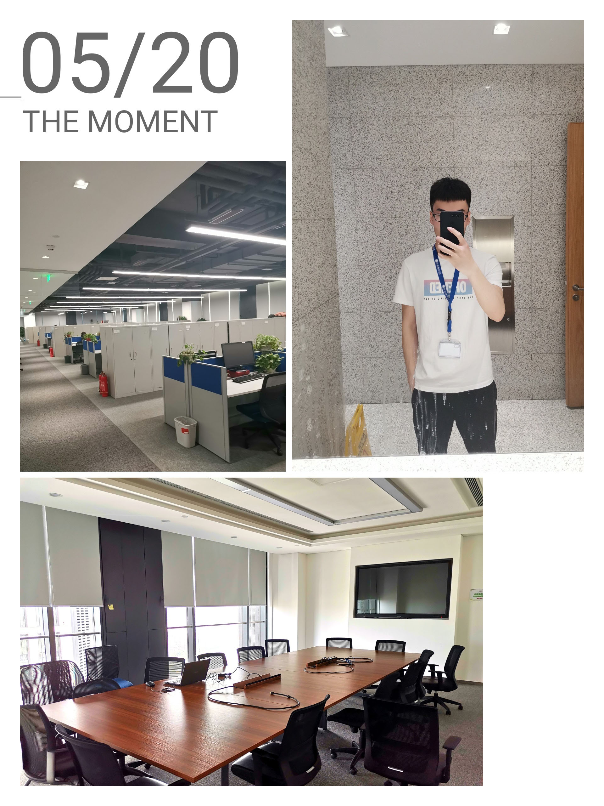
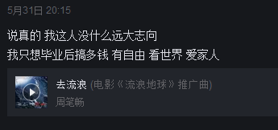

前言
其实我并不擅长写这种文章，不仅不擅长，更有些许讨厌，就像上学以来一直不喜欢作文。
这篇文章本应该写在6.1，但由于当天工作组请客，后来忙于写论文，一直拖延到现在。
为什么应该写在6.1？
5月31日去北京签了三方协议，虽然傍晚回校的路上还有收到offer，但是已经不考虑它了。我的2019毕业找工作就画上“。”了。
为什么找工作
为什么会问“为什么找工作”这个问题呢？
因为之前没有打算读完本科就工作，想着硕士之后再考虑。
没有推免资格的我，只能选择考研。
最后的结果也不想多说，但还是有必要吐槽一下考研真的是个有些玄学的东西。
事实上，只是因为我不够强！
正文
考研以及调剂的事情，一直弄到3月末。
真正开始找工作可以从3月30号开始算起，那天我做了第一个笔试，快手的。
开始
做简历，投简历，主要投的公司都是杭州、苏州、武汉的。
4月9号，清明节刚过，做了OYO的笔试。
关于OYO我知道的不多，只记得hr说他们是行业独角兽。
听说是酒店界的“拼多多”，也有说是“美团+携程+Airbnb”的集合体。
笔试之后再无后续，他们好像主要要的实习生，几乎没有校招全职，下图是学校旁边的一个OYO。
第一场面试
4月10号，OYO笔试的第二天，我收到了杭州一家公司的面试邀请，之前在BOSS直聘上和对方hr简单沟通过。
当时网上看过这个公司，硅谷回国的创业团队，杭州分部的人应该还不多，但都挺厉害，很向往这样的团队。
第一次技术面试，不得不说，有些紧张。面试官主要问的是我简历‘项目经历’和‘技能实践’里面的内容，问题基本上答的都可以吧，但也说不上好，很多我自己感觉答得挺模糊的。
最后结束的时候，面试官向我丢了一个takehome。因为之前只会Vue，还没开始看React，所以takehome就是用React写一个2048的小游戏。
国家电网
因为我的大学背景，身边很多同学都去报考国家电网了。刚开始找工作的我，虽然不是很想去那里，但为了有个保底，和爸爸沟通之后，决定还是回家考一下，顺便回家看看。从爸爸的话语中，能感觉到其实他们挺想让我去的，“离家近、狠稳定”。
4月12日，保定——北京——合肥，G6718、G323，我来到了合肥。说来，作为一个安徽人，每次上学、回家都会路过这个城市，但这是第一次踏上这个城市的土地。
路过科大，如果半年多以前，没有选择去南京，而是选择这里，又会是怎样的结果？
并没有太重视国网，所以考试前一天晚上才知道三个小时的机试，全是选择。报到的时候看到大多数都是省内的一些院校，也有一些是硕士生。报到时老师和我说，你本科生只能去县局，我象征性的点了点头。
初试那天，两个小时交了卷，都是一些计算机的通识知识。下午G635，我回家了。
在家期间，做过一些笔试，把前面那个杭州创业公司的takehome也完成了，代码在这，然而几天后，结果并不理想。
“在表达4X4矩阵时，你采取的方式是直接声明16个位置，若做成1000X1000的形式，你的方式可能是非人力所能及的。”
第一感觉是，谁能想到你考的2048是1000X1000,给takehome的时候也不说一下，实现了2048的功能不就可以了，时间还很短，还是初学React。后来一想，或许人家公司向考察的不仅是功能的完成和学习能力，更是架构方面。好的，你的确是个好公司，我没看错。
有些失落，毕竟当时很喜欢那里，很向往。
第一个offer
在家期间还收到了一家公司的面试邀请，主动找我的，大概是在某个招聘网站上看到我的信息。她说在苏州、武汉都有分公司，是做桌面建模软件，可能你不太明白，大概就是类似Matlab，但是要做我们国内自己的。
让我出乎意料的是，他们找我并不是前端开发方向，而是C++…
一面在4月16日，虽然C++都忘得差不多了，但是我知道问的都是非常基础的一些问题，比如继承、多态和接口之类的，最后告诉我这一面就算过了，之后会给我安排二面。
二面在4月18日，时间比一面要短，技术就简单聊了一下，聊了Java和线性代数，之后就聊了聊公司。
两轮面试都感觉不是很严格，大概是他们的确很缺人吧。后来给了我offer，大概是月薪9k，让我考虑一周。我并不是很满意，实话。
国网面试
国网笔试顺利的过了，通知我4月21号参加面试。需要着正装，果然，是事业单位没错了。
第一次穿正装啊，不得拍一下？…
面试是所谓的规格化，我第一次遇到，几个类似公务员的问题，说说自己的看法就没了。
但是我从早上八点去，等到了将近中午一点，我似乎是整个上午去面试的最后一个，真 · 压轴。
最后填了一下意向，我只填了仅市内调剂，当时那个人和我确认了好几遍。
我的想法是，既然回家就是为了离家近，不能回自己市，还来什么，何况本来就不是很想来。
返校前夕
国网面试完，就打算返校了，毕竟论文还没一点没开始。
返校前，做了好几家笔试，其中包括杭州一家投资理财公司。后来hr和我聊之后，得知是老乡，对我格外关心，笔试完当天傍晚就立刻安排了电面，面试还算可以。
之后，对方和我说公司没有校招指标，只能先去实习一个月，但是他说是几乎实习的全部转正了。由于快要毕业了，事情比较多，综合考虑之下还是拒绝了。
回校的前一天晚上八点多，收到了武汉某个游戏公司的面试邀请，但是第二天约定时间我刚好在高铁上，只好和对方沟通延期了。
一天面两家
4月25日，无为——北京——保定，在学校准备一些材料准备28号去北京参加一家银行的面试。
意外的，之前延期的武汉游戏公司的面试，又被安排到了28号上午，又是在高铁上。没办法了，只好将高铁改签提前了一个多小时。
28号上午G602，到达北京西站，准备找个咖啡厅，没看到，小跑着找到了一个酒店。视频面了半个多小时的样子，基本还OK，但有个问题答的不好，就是JS的事件循环，之前一直感觉对这个挺熟悉的，大意了。
下午一点赶到银行，一面技术面完之后立即安排了hr面，两轮面试都相对较快，也没有互联网公司那么问的深。
另一家银行
5月3日，收到第一家银行的体检、实习通知，20号去。
5月5日，收到了游戏公司的offer，竟然只有一面，薪资和之前苏州的差不多，除了地理位置，依旧不想去。
期间一个同学收到了另一家银行某个子公司的offer，薪水还不错了，所以我也申请了。5月10号，我又来到北京参加一面，这两个月，无数次在北京——保定之间奔波…
去的有点早，在旁边的万达看到了中国好声音的海选，小姐姐唱歌真好看
实习
5月19日，我来到北京，准备参加第一家银行的实习，说是实习，更像是考试，因为只有几天的是时间。
真的好大，人也很多，一楼的五个大电梯，饭点的时候还是得排好长的队。
软开中心和数据中心，一共十几个部门。我被分到了软开中心的管理信息开发处，听说是一个主要对内的部门。
实习的内容各种各样，可能和所在的部门有关，我这个组这一批只有三个人，实习内容是有三个课题选一个。
我选的是一个数据分析+数据可视化的，接触过一些，相对来说好点，最后一天下午汇报一下，整个过程感觉还不错，导师小姐姐对我也非常好。

最后一场面试
5月29日，我收到了实习的银行的签约通知，但是没说薪资，大概是因为银行吧。
之前也收到第二家银行的二面通知，5月30号，所以决定还是去看看。
面试很正常，前面就是聊聊技术，除了最后一个应该是hr的小姐姐问我，你有没有崇拜的人？
头脑一片空白，真的没想过这个问题，也确实好像没有崇拜的人…
走出房间，想起来，我挺崇拜我师父的啊，ihahahha~
5月31日，去北京签了第一家实习的银行，傍晚回校的路上收到了第二家银行的offer，但是已经不考虑它了。
小总结
大概拿了四五个offer，但是最后还是没能回南方。
大概是因为考研没有实习经历，所以offer都没有过大厂的筛选，没有大厂的面试经历，算是挺遗憾的。
可能你会发现这篇文章没涉及到一些技术细节，因为在我的角度来看，平时夯实基础，然后多刷一刷面试题还是可以的。
写在最后
一个本科毕业生，即将开启北漂生活。
几周前，一个即将毕业的硕士学长对我说
没有读研也没有关系，你得在工作中保持学习，可是在工作环境中一直坚持学习，怎么会轻松呢？
硕士生在北京都很肝，何况你一个本科生，可能时常会感到孤独感。
其实我也没什么远大的志向…

希望
一切、一切从零开始，不忘初心
好好学习，好好工作
生于忧患，死于安乐
Life is short，make it wonderful
伏笔
会写大学的总结嘛？如果写了会公开嘛？
当爱好变成工作，会觉得累嘛？


如果长时间无法加载，请针对 disq.us | disquscdn.com | disqus.com 启用代理